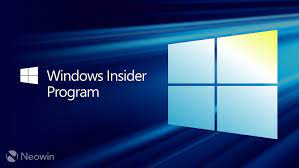
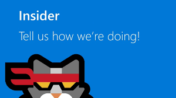

What is windows insider program?
Windows Insider is an open software testing program by Microsoft that allows users who own a valid license of Windows 10 or Windows Server 2016to register for pre-release builds of the operating system previously only accessible to software developers
Microsoft launched Windows Insider for developers, enterprise testers and the "technically able" to test new developer features on pre-release software & builds, not given publicly released, to gather low level diagnostics feedback in order to identify, investigate, mitigate & improve the Windows 10 OS, with the help, support and guidance of the Insider Program Participants, in direct communication with Microsoft Engineers via a proprietary communication & diagnostic channel.
It was announced on September 30, 2014 along with Windows 10. By September 2015, over 7 million people took part in the Windows Insider Program.On February 12, 2015, Microsoft started to test out previews of Windows 10 Mobile. Microsoft announced that the Windows Insider program would continue beyond the official release of Windows 10 for future updates.
Supported Devices
1).Supported processors:-
On July 17, 2017, reports began to come that Windows 10 Creators Update refused to install on PCs and tablets sporting Intel Atom "Clover Trail" processors. At first, it appeared as though this might have been a temporary block as Microsoft and hardware partners work to fix the issues preventing the operating system to run well. However, Microsoft later confirmed that devices running the "Clover Trail" Intel Atom processors would not be receiving the Creators Update, as the processors are no longer supported by Intel and does not have the appropriate firmware to properly run versions of Windows 10 newer than the Anniversary Update.
The following processors are no longer supported and will remain on Windows 10 Anniversary Update:
- Atom Z2760
- Atom Z2520
- Atom Z2560
- Atom Z2580
Because PCs with unsupported processors could not receive new features updates, Microsoft agreed to extend support for these PCs with the bug fixes and security updates for the latest compatible version of Windows 10.
Supported smartphones
Microsoft initially launched Windows 10 Technical Preview for certain third-generation (x30 series) phones from their Lumia family and subsequently released it to second-generation (x20 series) devices throughout the testing phase. Some hacked their non-Lumia phones (which were not supported at the time) to download the preview builds. Microsoft responded by blocking all unsupported models.To roll back the installed technical preview back to Windows Phone 8.1, Microsoft launched Windows Device Recovery Tool that removes Windows 10 and recovers the latest officially released software and firmware.
Preview build 10080, released on May 14, 2015, was the first to support a non-Lumia device, the HTC One M8 for Windows. This was followed up by Xiaomi who, in partnership with Microsoft, released a ROM port of Windows 10 to its flagship Mi 4 handset on June 1, 2015. At that time, it was limited to certain registered users in China.Build 10080 and its follow-up build 10166 also added support for fourth-generation Lumia (x40 series) devices. As a result, all compatible Windows Phone 8 or later Lumia phones now support the preview.